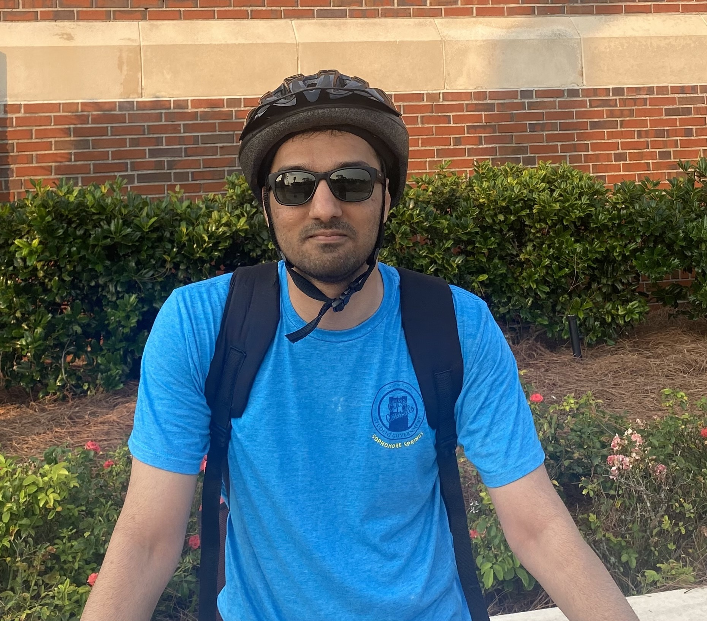

| Pratik Kamble | |
|---|---|
|

Kamble in 2023
|
|
| Affiliation | Research Foundation for SUNY |
| Education |
University of Florida (MS) University of Pune (BE) |
| Fields |
Software Security Fuzzing Binary Analysis |
| Website | pratikkamble.com |
Pratik M. Kamble is a doctoral researcher based in Binghamton, New York. His current research primarily focuses on software security, with recent work on WebAssembly security, compilers, fuzzing, reverse engineering, and binary analysis.
He has also contributed to work in human-centered computing and lifelogging technologies.[1]
Kamble earned his Bachelor of Engineering (B.E.) in Computer Engineering from the University of Pune. He later moved to the United States to pursue a Master of Science in Computer Science at the University of Florida.
He is currently a doctoral researcher working under the supervision of Dr. Aravind Prakash.
As of 2025, Kamble's work investigates the security landscape of WebAssembly (Wasm). His research includes binary and source code analysis to identify flaws in modern software systems. He is actively working on fuzzing methodologies and reverse engineering techniques.
In service to the security community, he serves as a member of the Artifact Evaluation Committee (AEC) for the USENIX Security Symposium 2026.[1]
Kamble holds a patent for a Brain-Computer Interface (BCI) system. The invention, titled "A System and a Method for Performing a User Activity Using an Electroencephalogram (EEG)," utilizes Recurrent Neural Networks (RNN) to interpret brain signals for user activity control. It was issued in June 2024.[2]
In 2018, Kamble proposed frameworks for automated data collection in his paper "Life Logging: A Practicable Approach." This work addressed the privacy and data management challenges inherent in lifelogging technologies using wearable sensors.[3]
Prior to his doctoral studies, Kamble worked as a Software Engineer at Vibrent Health in Fairfax, Virginia. He contributed to the All of Us Research Program (NIH), where he engineered bulk message interfaces using Apache Kafka to optimize system performance.[4]